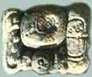
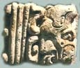

tablas escritas por el sol."
|
|
Latino Studies Institute— Resources |
|
|
Library resources, which support the Latino Studies Institute, are funded in part by a generous grant from Title V. Library collections aim to mirror Long Beach City College's commitment to a culturally pluralistic educational program. The collections serve all students and may be of particular interest to those participating in the Latino Studies Institute Learning Community and Puente Program. As the Library continues to expand its collection of materials related to Latino studies, this page will be updated, and the titles of newly acquired items will be published. |
The LBCC Library catalog, called Voyager, is Web-based and searchable via the Internet. To access Voyager, first go the Library's homepage at http://lib.lbcc.edu, then click on the button labeled "Books."
Use a keyword or subject search. For example, you may use keywords, such as these:
| Cesar Chavez | |||
| Teatro Campesino | |||
| Aztlan | |||
| Mayan arts | |||
The Library of Congress Classification Numbers (or call numbers) are not inclusive of all the books on this subject in LBCC Library, as variations in the focus of books result in their being cataloged in different areas, according to the the Library of Congress Classification System.
For example, a search on the subject, Latino history, will show books belonging to the following call number classifications:
| Call Number |
Subject |
||
| L | Education | ||
| R | Medicine | ||
| HM | Sociology | ||
| BL-BX | Religion | ||
| N | Fine arts | ||
The following is not a comprehensive of the Library's resources on Hispanic history. It is but a small sampling of the rich resources that LBCC Library offers. Please search the online catalog for the campus location and the availability of items.
Selected Resources, Summer 2003
| Videos & DVDs |
||
Director |
Title | |
| Almodovar, Pedro | Women on the Verge of a Nervous Breakdown | |
| Amarel, Suzana | Hour of the Star | |
| Arau, Alfonso | Like Water for Chocolate | |
| Babenco, Hector | Pixote | |
| Barreto, Bruno | Dona Flor and Her Two Husbands | |
| Bemberg, Maria-Luisa | Camila | |
| Buñuel, Luis | The Discreet Charm of the Bourgeoisie | |
| Buñuel, Luis | That Obscure Object of Desire | |
| Buñuel, Luis | Tristana | |
| Diegues, Carlos | Bye, Bye Brazil | |
| Gavaldon, Roberto | Macario | |
| Nava, Gregory | Arriba: El Norte | |
| Nava, Gregory | Selena | |
| Palcy, Euzhan | Sugar Cane Alley | |
| Puenzo, Luis | The Official Story | |
| Saura, Carlos | Cria | |
| Saura, Carlos | Peppermint Frappe | |
| New Books & E-books |
|
| The full text of electronic books and reference materials is now available from links in Voyager, the Library's online catalog. There are about 4,500 e-books that can be read online. They are electronic versions of print books, published on a wide range of subjects, and now you can read them in their entirety from your computer. To find these e-books, try doing a keyword search for "electronic books" (include quotation marks to search any phrase). You can then make your search results sort by title (or author, or publication date) by using the "SORT BY" drop-down menu. To find an e-book on a specific topic, try a keyword search, along with +"electronic books". Be sure to include the quotation marks and plus sign. This will ensure that your keyword is included in the results. Here is an example: +Mexico +"electronic books" |
|
| Call Number | Title |
| E 184 .S75 B674 1998 | Borderless Borders: U.S. Latinos, Latin Americans, and the Paradox of Interdependence |
| E 184.M5 P67 2000 | Crowding Out Latinos: Mexican Americans in the Public Consciousuess |
| E 184 .S75 E84 | Ethnic Identity: Formation and Transmission Among Hispanics and Other Minorities |
| E 184 .S75 L368 1988 | Latinos and the Political System |
| E 184 .S75 L356 1997 | Latino Cultural Citizenship: Claiming Identity, Space, and Rights |
| E 184 .S75 P87 1997 | Pursuing Power: Latinos and the Political System |
| F 392. L62 G55 1994 | We Fed Them Cactus / Fabiola Cabeza de Baca |
| F 394 .C83 N37 1998 | Cristal Experiment: A Chicano Struggle for Community Control |
| F 755 .M5 B34 1995 | Dos Mundos: Rural Mexican Americans, Another America |
| F 790 .M5 G65 1994 | Roots of Chicano Politics, 1600-1940 |
| F 787 .S18 1995 | Border Correspondent: Selected Writings |
| F 790 .M5 C49 1984 | Lost Land: The Chicano Image of the Southwest |
| F 805 .M5 N67 1992 | Hispano Homeland |
| F 1230 .H56 1991 | Encomenderos of New Spain, 1521-1555 |
| F 1234 .N495 1999 | Mexico in the 1940s: Moderniity, Politics, and Corruption |
| F 1235.5 .A2 C35 1995 | Mexican Political Biographies, 1935-1993 |
| F 1236 .H67 1992 | Hope and Frustration: Interview with Leader's of Mexico's Political Opposition |
| F 1371 .K67 2002 | Waking the Dictator: Veracruz, the Struggle for Federalism and the Mexican Revolution, 1870-1927 |
| F 1408.3 .S73 1998 | Riddle of Cantinflas: Essays on Hispanic Popular Culture |
| F 1415 .R44 1998 | Regional Mechanisms and International Security in Latin America |
| F 1418 .U686 1999 | United States-Latin American Relations, 1850-1903 |
| F 1436 .B37 1998 | As If Jesus Walked on Earth: Cardenismo, Sonora, and the Mexican Revolution |
| GR 111 .S65 E87 1990 | Folklore of Spain in the American Southwest |
| HD 8073 .C67 G37 1995 | Memories of Chicano History |
| HD 8081 .M6 B673 1998 | Border Crossings: Mexican and Mexican-American Workers |
| HD 8081 .M6 V37 1999 | Proletarian of the North: a History of Mexican Industrial Workers in Detroit and the Midwest, 1917-1933 |
| HN 79 .T42 R57 | Living on the Edge of America: At Home on the Texas-Mexico Border |
| HV 8148 .L53 E73 | Race, Police, and the Making of a Political Identify: Mexican Americans and the Los Angeles Police Department |
| LC 2674 .N6 R62 2001 | Remaining and Becoming: Cultural Crosscurrents in an Hispano School |
| LC 2683 .D66 1997 | Other Struggles for Equal Schools: Mexican Americans During the Civil Rights Era |
| PQ 7078.5 .N6 M49 1996 | Speaking for Themselves: Neomexicano Cultural Identity and the Spanish-Language Press, 1880-1920 |
| PQ 7081 .3 .K56 1999 | King David's Harp: Autobiographical Essays by Jewish Latin American Writers |
| PS 153 .H56 C47 1997 | Show and Tell: Identity as Performance in U.S. Latina/o Fiction |
| PS 153 .M4 G87 1995 | Rethinking the Borderlands: Between Chicano Culture and Legal Discourse |
| PS 153 .M56 T43 1996 | Teaching American Ethnic Literatures |
| PS 3557 .I296 M3 1993 | Magic of Blood |
| PS 3560 .I55 C57 | Circuit: Stories from the Life of a Migrant Child |
| PS 3563 .O73 Z472 1993 | Nepantla: Essays from the Land in the Middle |
| PS 3568 .I587 C87 1999 | Curtain of Trees: Stories |
To top of page
|  | Selected Reference Works |
Call Number |
Title |
Ref E 184 .A1 A63448 1997 |
American Immigrant Cultures. 2 vols. |
| Ref E 184 .A1 C47 2000 | Civil Rights in the United States. 2 vols. |
| Ref E 184 .A1 E574 2000 | Encyclopedia of Minorities in American Politics. 2 vols. |
| Ref E 184 .A1 G14 1995 | The Encyclopedia of Multicultural America. 2 vols. |
| Ref E 184 .A1 M544 1997 | Minority Organizations: A National Directory |
| Ref E 184 .A1 R78 1998 | Racial and Ethnic Diversity |
| Ref E 184 .S75 C49 1995 | Chronology of Hispanic-American History |
| Ref E 184 .S75 H365 | Handbook of Hispanic Cultures in the United States. 4 vols. |
| Ref E 184 .S75 H557 1997 | The Hispanic-American Almanac |
| Ref E 184 .S75 H5655 2003 | Hispanic Americans: A Statistical Sourcebook |
| Ref E 184 .S75 K36 1997 | Hispanic Firsts: 500 Years of Extraordinary Achievement |
| Ref E 184 .S75 N69 1994 | Everything You Need to Know About Latino History |
| Ref E 184 .S75 O287 2001 | Atlas of Hispanic-American History |
| Ref F 859 .L84 P58 1997 | Los Angeles A to Z: An Encyclopedia of the City and County |
| Ref F 1210 .E63 1997 | Encyclopedia of Mexico: History, Society, and Culture. 2 vols. |
| Ref F 1406 .E52 | Encyclopedia of Latin America |
| Ref F 1406 .E53 1996 | Latin American History and Culture. 5 vols. |
| Ref G 1046 .E15 P3 1998 | Past Worlds: The Times Atlas of Archaeology |
| Ref GN 307.E52 1996 | Encyclopedia of Cultural Anthropology |
| Ref GN 315 .P417 | Peoples of the Earth: Mexico and Central America. Vol. 4 |
| Ref GN 333 .W67 1998 | Worldmark Encyclopedia of Cultures and Daily Life. Vol. 2 |
| Ref GN 496.C37 1996 | Dictionary of Race and Ethnic Relations |
| Ref GN 496 .L48 1994 | Ethnic Relations: A Cross Cultural Encyclopedia |
| Ref Desk HA 202 .S7 2002 | Statistical Abstract of the United States |
| Ref Desk HA 203 .H57 1993 | Hispanic Americans Today |
| Ref HF 3066 .M495 1994 | Mexico Business: the Portable Ency. for Doing Business in Mexico |
| Ref HF 3066 .W74 1994 | The Complete Guide to Doing Business in Mexico |
| Ref HN 57 .E58 1993 | Encyclopedia of American Social History |
| Ref PC 4640 .R32 1997 | Spanish-English English-Spanish Dictionary |
Selected Biographical Reference Works |
||
Call Number |
Title |
|
| Bio Ref E 184 .S75 D53 1996 | Dictionary of Hispanic Biography | |
| Bio Ref E 184 .S75 H36 1992 | Hispanic America: Freeing the Free, Honoring Heroes | |
| Bio Ref E 184 .S75 M435 1997 | Notable Latino Americans | |
| Bio Ref E 184 .S75 N68 1998 | Notable Hispanic American Women. 2 vols. | |
| Bio Ref E 184 .S75 W53 1995 | Who's Who Among Hispanic Americans | |
|  |
Selected Literary Reference Works |
Call Number |
Title |
| Ref E 184 .S75 H365 | Handbook of Hispanic Culture in the U.S.: Literature & Art. Vol. 1 |
| Ref PQ 6039 .H5 1994 | Hispanic Literature. 4 vols. |
| Ref PQ 7081 .A1 E56 2000 | Concise Encyclopedia of Latin American Literature |
| Ref PQ 7081 .A1 L37 2002 | Latin American Writers. |
| Ref PQ 7081 .A1 M29 1994 | Masterpieces of Latino Literature |
| Ref PQ 7081.3 .H58 1991 | Hispanic Writers. 3 vols. |
| Ref PQ 7081 .M625 1999 | World Literature and Its Times. Latin American Literature and Its Time. |
| Ref PS 153 .M4 C485 1999 | Dictionary of Literary Biography: Chicano Writers. Vol. 209 |
| Ref PS 153 .M56 A414 2000 | American Ethnic Writers. 2 vols. |
| Selected Electronic Resources |
| • | Biography Resource Center Provides access to biographical information, full-text articles, and Web sites. |
|
| • | ERIC database Provide citations and abstracts to education-related articles, reports, and conference proceedings. |
|
| • | Encyclopaedia
Britannica Consists of a fully searchable collection of authoritative references, including Britannica's latest article database with hundreds of articles not found in the print edition, along with Web links. |
|
| • | Ethnic
Newswatch Provides a comprehensive, full-text database of the newspapers, magazines, and journals of the ethnic, minority, and native press. Ethnic NewsWatch encompasses more than 450,000 full-text articles from over 200 publications. The text is available in English or Spanish (subscription to begin in the near future). |
|
| • | ¡Informe! Provides indexing, full-text, and images of the most popular Spanish language magazines and pamphlets. |
|
| • | Hispanic-American Experience on File Provides full-text coverage of Latin American and Caribbean subject matter. The database includes an overview of the rapid expansion of Hispanic immigration (subscription to begin in the near future). |
|
| • | Literature Resource Center Provides the full text of biographical and critical information about authors, literary movements, themes, and genres. |
|
| • | NewsBank Provides a full-text news resource, containing comprehensive coverage of current issues and events from over 500 United States and Canadian newspapers, news sources, and domestic and international news wires. |
|
| • | ProQuest Provides citations, abstracts, and selected full-text articles from over 1,500 scholarly and general-interest periodicals-many of them full-text-covering all major fields of study in the humanities, social sciences, and science and technology. |
Internet Resources |
|||
| To search for Hispanic history resources
on the Internet, use a search engine such as Altavista (http://www.altavista.com)
when you know the exact terms or names of your topic. |
|||
| • | Enter two or more related words, each with a + in front of it, to specify your search. |
||
| • | Search for phrases by putting double quotes
around two or more words, for example: |
||
| +"chicano literature"+california +"cesar chavez"+"united farmworkers" |
|||
| • | Put an asterisk * after the root word to find plurals or other words beginning with the root, for example: |
||
| comput* |
|||
| will find articles with the words computer, computers, computing. |
|||
| • | Use subject directories, such as Yahoo (http://www.yahoo.com), or Internet indexes, such as Librarian's Index to the Internet (http://www.lii.org), for browsing or when you are not sure of the terms or names. Indexes lead you from the general subject to the specific subtopic. | ||
Selected Web Sites Related to Latino History
| • | CLNET Homepage: http://clnet.ucr.edu | |
| • | The Azteca Web Page: http://www.azteca.net/aztec/ | |
| • | UCLA Chicano Studies Research Center: http://www.sscnet.ucla.edu/csrc/ | |
| • | Chicana and Chicano Studies Program. UNM: http://www.unm.edu/~chicanos/ | |
| • | Chicano Research Library, UCLA: http://www.sscnet.ucla.edu/csrc/library/ | |
| • | Chicano Studies Research Collection, ASU: http://www.asu.edu/lib/archives/chicano.htm | |
| • | REFORMA: http://clnet.ucr.edu/library/reforma/ | |
| • | Nahuatl Homepage: http://www.mrs.umn.edu/academic/history/Nahuatl/index.htm | |
| • | Ethnic Studies Library, UC Berkeley: http://eslibrary.berkeley.edu | |
| • | Chicano Library Center at San Jose State: http://www.library.sjsu.edu/dept/chicano/research.htm | |
| • | National Association for Chicana/Chicano Studies: http://naccs.org |